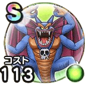

破壊神シドー
ドラクエ2イベントこころ最大コスト+4スキルHP回復効果+10%HP20%以下のときのスキルHP回復効果+5%デイン属性耐性+10%封印耐性+10% / 9.0点
くわしい特徴
【ランク特殊効果】 こころ最大コスト+4スキルHP回復効果+12%HP30%以下のときスキルHP回復効果+5%デイン属性耐性+10%メラ属性耐性+5%封印耐性+20%怯え耐性+10%こころ最大コスト+4スキルHP回復効果+10%HP20%以下のときのスキルHP回復効果+5%デイン属性耐性+10%封印耐性+10%